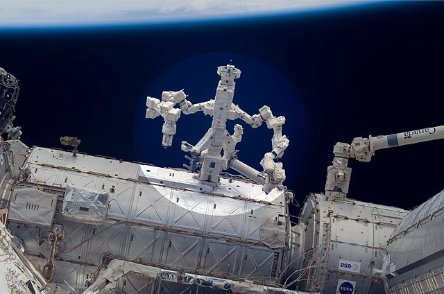
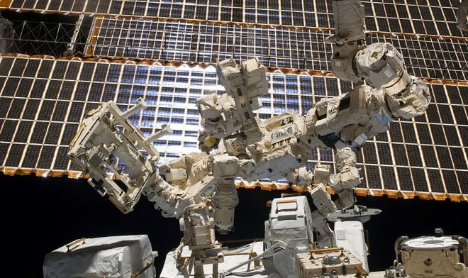
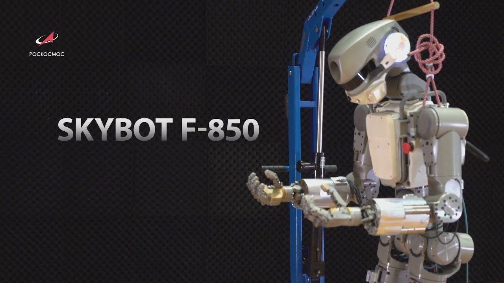

Рассматривается [1–6] класс монтажно-сервисных роботизированных космических модулей (МСРКМ), которые оснащены манипулятором (манипуляторами), способны самостоятельно перемещаться в космическом пространстве и приспособлены для контактного взаимодействия с монтируемыми (обслуживаемыми) объектами. Характерной особенностью таких модулей является наличие динамических режимов, в которых перемещение груза относительно основания при помощи манипулятора сочетается с перемещением основания. При этом возможны собственные инерционные движения по внутренним степеням свободы МСРКМ, возникающие при отсутствии как внешних по отношению к МСРКМ сил и моментов, так и управляющих воздействий в шарнирах манипулятора. Исследование этих движений представляет интерес с точки зрения реализации важного принципа организации движения роботов – обеспечения соответствия свободных и вынужденных движений манипулятора [7–9]. При этом эффективным оказывается введение в рассмотрение некоторой приведенной системы, уравнения динамики которой при определенных условиях могут быть получены в форме уравнений Рауса [10]. В докладе рассмотрены вопросы синтеза программных движений для поставленной в соответствие МСРКМ конкретного вида нелинейной колебательной приведенной системы.
Читать далее, страница 51.
В настоящее время в ряде стран разрабатываются космические аппараты 300(КА) для сервисного
обслуживания различных объектов на орбите Земли, ввиду перспективности таких КА с
точки зрения эффективности использования космического пространства. При рассмотрении задачи
построения облика таких КА возникает вопрос о средствах управления движением, а также
планировании траектории полета с целью оптимального использования запасов топлива.
При постановке задачи создания сервисного КА, предназначенного для продления срока
активного существования различных объектов на орбите, в первую очередь возникает вопрос выбора
класса обслуживаемых объектов. Классификацию в данном случае удобно провести по типу орбиты
обслуживаемого КА, так как он определяет в том числе возможность выполнения тех или иных задач
КА.
В настоящее время эксплуатируются следующие основные виды КА с характерными орбитами:
− низкоорбитальные КА (высота полета до 1000км) дистанционного зондирования Земли
(оптические, радио, в интересах разведки ресурсов, мониторинга, военных целей);
− навигационные КА, с орбитами высотой порядка 20000км (период 12 часов);
− КА связи и ретрансляции на вытянутых эллиптических орбитах типа «Молния» (перигей 500-
800км, апогей за геостационарной орбитой);
− геостационарные КА различного назначения.
Распределение искусственных объектов в околоземном пространстве по высоте апогея
подтверждает правильность принятой классификации. Сервисный КА должен совершить облет
нескольких целей обслуживания за весь свой срок службы – в противном случае пропадает смысл его
создания. Рассмотрим особенности облета нескольких КА в каждом из выделенных классов.

В настоящее время в перспективных программах освоения дальнего космоса, осуществления
межпланетных полетов на Луну, к Марсу и ближайшим астероидам, большое значение придается
использованию робототехнических систем космического назначения. Одним из направлений
развития робототехнических систем в пилотируемой космонавтике является разработка так
называемых антропоморфных роботов-помощников экипажей (РПЭ), т.е. роботов, подобных по
построению телу человека и обладающих аналогичными кинематическими характеристиками. Такие
антропоморфные роботы имеют некоторые преимущества по сравнению с другими типами
робототехнических систем при выполнении высокоточных полетных операций в уже созданных
человеко-машинных интерфейсах пилотируемых космических комплексов.
Антропоморфные роботы помощники экипажей могут функционировать как в автономном автоматическом режиме, так
управляться дистанционно в копирующем режиме. Копирующий режим дистанционного управления
РПЭ наиболее эффективен в ситуациях неопределенности, когда целеполагание и алгоритм
деятельности должен быть гибко адаптирован к изменяющимся внешним условиям. Наилучшим
образом к такому виду деятельности приспособлен человек. Поэтому использование преимуществ
человека может быть реализовано в копирующем режиме дистанционного управления роботом с
использованием экзоскелета. В качестве человека-оператора, управляющего РПЭ, может быть
член экипажа или оператор наземного Центра управления полетами.